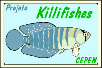
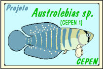

Retorna para Índice Projetos

Projeto "Killifishes"

Subprojeto
Estudos sobre o
Austrolebias sp.
(CEPEN 1)
e análise deste seu Ecossistema, a "Lagoinha do Sudoeste"
Prólogo
Objetivos
Prólogo
Algumas espécies de Killifishes tem um ciclo de vida realmente impressionante,
como os que vivem em pequenas coleções d’água (alagados de chuva),
que passam parte do ano secos.
Ali, na época das chuvas quando acumula um pouco d’água,
surgem como que por milagre.
Eles têm pressa para crescer e reproduzir (produzir ovos)
antes que a água toda evapore ou se infiltre no solo.
Para isto necessitam apenas algumas semanas, dando por cumprida sua missão.
Algumas espécies depositam os ovos num buraco de poucos centímetros que cavam no solo.
Nestas situação, tais ovos deverão resistir durante o período mais seco do ano,
quando o solo do alagado pode até mesmo ficar estorricado pelo calor do sol.
"O quase total desconhecimento sobre este grupo de peixes
e a conseqüente destruição de seus ambientes
por drenagens, aterros, envenenamentos, poluição, etc.,
estão promovendo um extermínio de diversas espécies."
Felizmente este não é o caso da "Lagoinha do Sudoeste",
que está em área rural cujos proprietários
vêm de gerações de pessoas preocupadas com a preservação do ambiente.
As atividade do CEPEN no Rio da Várzea como pesquisas e campanhas,
possibilitaram não somente um melhor conhecimento sobre estes ecossistemas,
mas a descoberta de alguma preciosidades ainda "escondidas" da Ciência.
Este é o caso do
Austrolebias sp.
(CEPEN 1)
um belo Killifishes,
ainda em fase laboratorial de identificação,
mas que pode ser espécie nova para a ciência.
Pela heróica sobrevivência desta criatura tão frágil
em região eminentemente de agropecuária,
mas em propriedade rural produtiva e conservacionista,
simboliza para nós do CEPEN, mais que uma esperança,
um exemplo de que é possível a conciliação entre produção e preservação.
Por esta razão,
esta espécie foi tomada como símbolo do Projeto Killifishes,
... e sua sadia existência
nos servirá ainda por bandeira e alento nas adversidades.
Objetivos
São objetivos de CEPEN neste projeto:
==> Aprofundar estudos no ecossistema da Lagoinha do Sudoeste;
==> Apurar melhor a biologia do
Austrolebias sp.
(CEPEN 1)
;
==> Procurar garantir proteção à Lagoinha do Sudoeste e sua redondeza,
contra ações externas alheias ao esmerado controle dos proprietários.